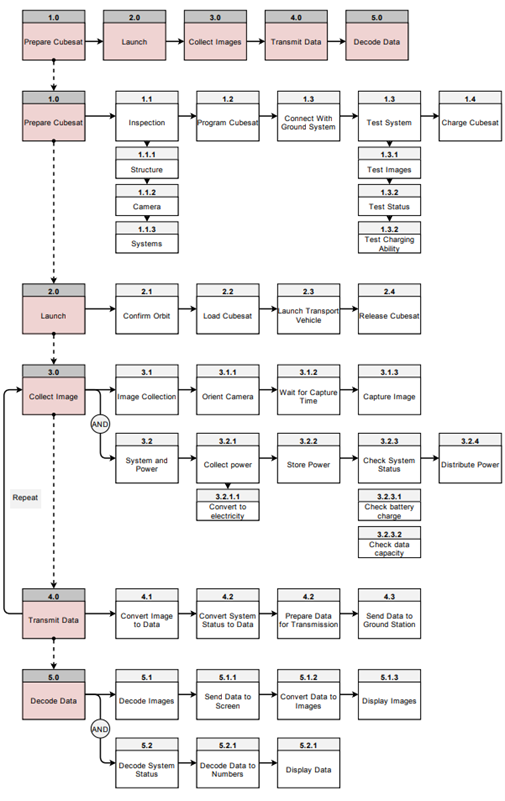

Functional Flow Diagram
The functional flow diagram provides a more detailed and chronological breakdown of the functions needed to be done by the CubeSat. Instead of breaking down tasks into subtasks, this diagram breaks the mission down into chronological stages and the subtasks that need to be completed to complete the mission. Due to the nature of the CubeSat’s mission, there isn’t a long string of distinct tasks but rather a continuous cycle of repeating several tasks simultaneously, taking pictures, converting them to data, reading the device status, and relaying it all to the ground station(s). As previously mentioned, the launch and deployment of the CubeSat is not done by the CubeSat itself but by being loaded on a rocket not designed by this team. Note that the power generating tasks for the ground station are independent of the ones listed on the chart as collecting power for the ground station is easy and accessible. Also, if in a real-life usage of this CubeSat there are multiple ground stations receiving data, the data can be transmitted between them using conventional sources.
